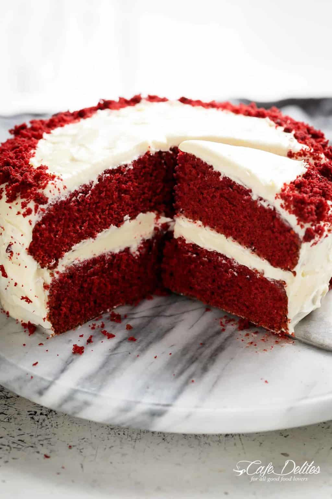

Is it chocolate? Is it vanilla? WHAT IS IT! Essentially it’s a chocolate cake made with little cocoa powder. The cocoa reacts with the acidic vinegar and buttermilk, and in turn keeps the cake moist, light, and fluffy. The chocolate taste is fairly mild but the flavours are delicately rich.
- 1/2 cup (120g) unsalted butter, at room temperature
- 1 1/2 cups (300g) caster sugar (or fine white granulated sugar)
- 2 large eggs
- 1/4 cup cooking oil
- 1 tablespoon (10g) unsweetened cocoa powder plus 1 tablespoon extra for dusting
- 2 1/2 tablespoons (45ml) red food colouring (liquid, not gel)
- 2 teaspoons (10ml) pure vanilla extract
- 1 tablespoon (20ml) white vinegar
- 2 1/2 cups (350g) plain cake flour, sifted (or all purpose/plain flour)
- 1 teaspoon baking soda (bi-carb soda)
- 1 teaspoon salt
- 1 cup (250ml) buttermilk*
- Heat oven to 350°F | 175°C. Lightly grease two 8-inch cake pans with butter or nonstick oil spray and lightly dust with 1 tablespoon of the sifted cocoa powder.
- Cream butter and sugar together until light in colour. Add eggs one at a time, beating well after each addition to combine well.
- In a smaller bowl, mix together oil, remaining cocoa powder, red food colouring and vanilla until smooth. Stir colour mixture and vinegar through the creamed sugar mixture to combine.
- Sift together flour, baking soda and salt in a separate bowl. Add half of the dry ingredients and half of the buttermilk to the wet ingredients; mix well. Repeat with remaining dry ingredients and buttermilk.
- Divide batter among the 2 prepared pans and bake for about 25 to 30 minutes, or until a toothpick inserted into the centre of the cake comes out clean. Cool on a wire rack completely.